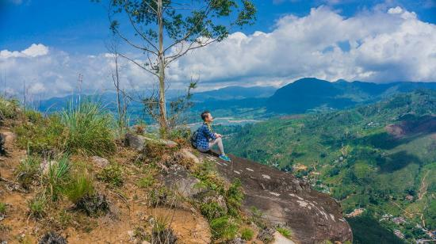
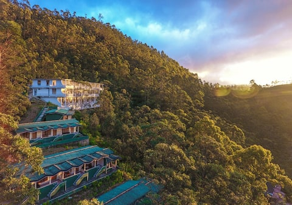

The mountain is located in the southern reaches of the Central Highlands in the Ratnapura District and Nuwara Eliya district of the Sabaragamuwa Province and Central Province —lying about 40 km (25 mi) northeast of Ratnapura and 32 km (20 mi) southwest of Hatton. The surrounding region is largely forested hills, with no mountain of comparable size nearby. The region along the mountain is a wildlife reserve, housing many species varying from elephants to leopards, and including many endemic species. Adam's Peak is important as a watershed. The districts to the south and the east of Adam's Peak yield precious stones—emeralds, rubies and sapphires, for which the island has been famous, and which earned for it the ancient name of Ratnadvipa. Adam's Peak is the source of three major rivers in Sri Lanka: Kelani River, Walawe River, and the Kalu Ganga (river).
 